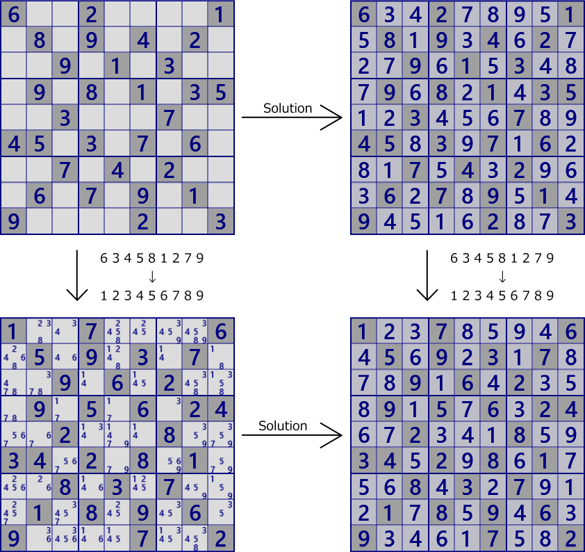
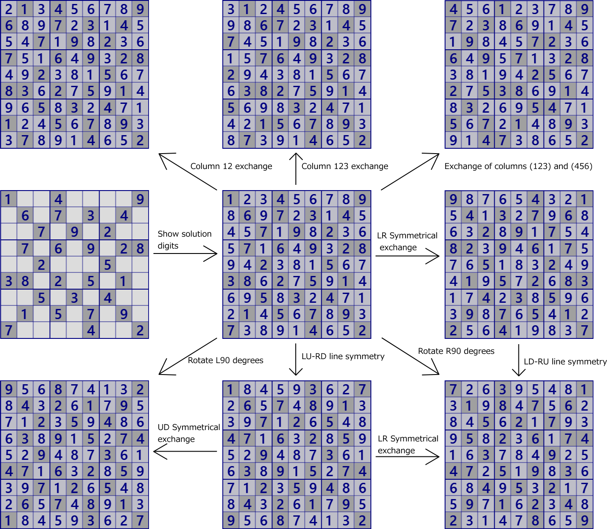
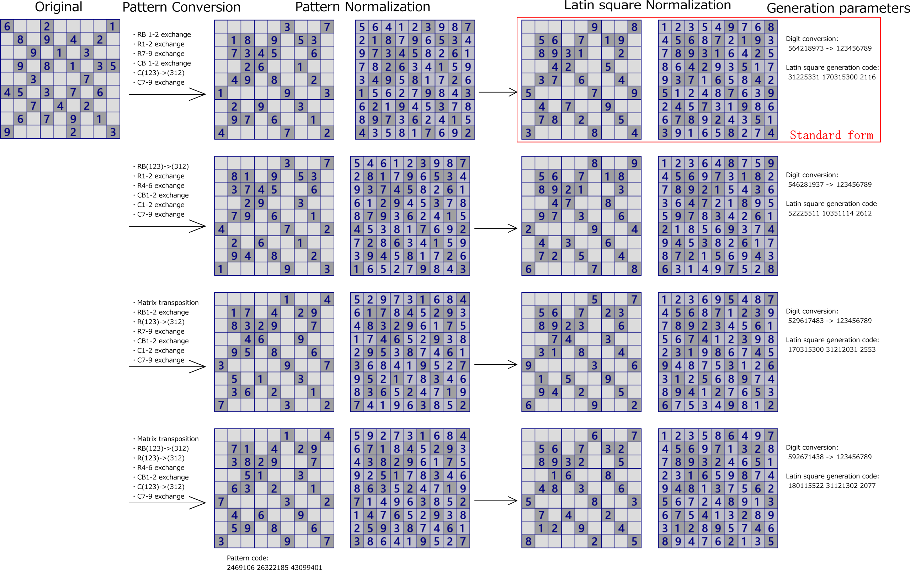

Conversion/standardization of Sudoku problem
The Sudoku problem can change appearance.
Even replacing digits or rearranging them in any order is a matter of Sudoku(ex. 634581279 → 123456789 )

Also, exchange of column 1 and column 2, exchange of column circulation exchange(1→2→3→1), (columns 123) and (columns 456) exchange,
exchange of row 1 and row 2, exchange of row circulation exchange(1→2→3→1), (row 123) and (row 456) exchange,
exchange of rows and columns (transposition),
Even if these transformations are made, it is established as a problem of Sudoku.
However, transformation beyond Sudoku's constraints can not be done like exchange of 1 and 4 columns.
Rotation can be represented by a combination of row and column exchange and up/down/left/right exchange, so we will not think about it here.

Naturally, even if such a transformation is carried out, and even if the digit conversion described below is carried out,
the essence as a problem of Sudoku will not change.
The difficulty level and analysis algorithms that can be applied at each stage are exactly the same.
How to solve Sudoku may be applicable to multiple algorithms in one scene.
Which algorithm to apply depends on the human preference to solve, implementation of the program,
so there will be some (many) differences in how to solve. i will not care about such things.
The problem of Sudoku is a combination of a digit position pattern and a Latin square.
Combination of the standard form of each pattern and Latin square, it becomes the standard form of Sudoku problem.
Of course, combining a pattern and a Latin squad can not solve the problem,
or there are multiple solutions, so that it is not a matter of Sudoku.
In GNPX problem creation, Latin square is generated, a problem is created together with the position pattern,
and it is examined whether it can be solved by the analysis algorithm.
In the following i will define the transformation of Sudoku problem properly and
establish the standardization method of Sudoku problem.
Conversion of Sudoku problem（Asymmetric transformation)
The problem of Sudoku is true even if exchange of rows, exchange of rows,
transposition of rows and columns, and conversion of combinations thereof are carried out.
However, transformation beyond Sudoku's rule is impossible, for example exchange of column 1 and column 4.
Conversion within Sudoku's rule can be classified and organized as follows.
- Convert row block
Let row 123 be row block 1. Likewise, row 456 is row block 2 and row 789 is row block 3. Row blocks can be exchanged arbitrarily. This exchange is 3!=6 ways. - Conversion within row block n (n=1,2,3)
Row abc in row block n can be exchanged arbitrarily. This exchange is 3!=6 ways. - Convert column block
Let column 123 be column block 1. Likewise, column 456 is column block 2 and column 789 is column block 3. column blocks can be exchanged arbitrarily. This exchange is 3!=6 ways. - Conversion within column block n (n=1,2,3)
column abc in column block n can be exchanged arbitrarily. This exchange is 3!=6 ways. - Transpose of rows and columns
Conversion of Sudoku problem（Symmetric transformation)
When the problem is point symmetric, the following conversion is made.
- Mirror exchange of row blocks 1 and 3
Exchange rows 123 and 987. - Mirror transformation of row block 3 in conjunction with transformation of row block 1
In conjunction with any transformation of row 123, it converts row 789 in a mirror image. For example exchange row 79 in conjunction with the exchange of row 13. There are 3!=6 ways of this conversion. - Exchange of row 46
- Mirror exchange of column blocks 1 and 3
Exchange columns 123 and 987. - Mirror transformation of row block 3 in conjunction with transformation of row block 1
In conjunction with any transformation of column 123, it converts column 789 in a mirror image. For example exchange column 79 in conjunction with the exchange of column 13. There are 3!=6 ways of this conversion. - Exchange of column 46
- Transpose of rows and columns
Standardization of problem patterns
The problem pattern is represented by a 27-digit binary number,
with the numeric representation of the cells in row 123 corresponding to 0/1.
Sudoku problem pattern is represented by this triplet number. i will call this "number of Sudoku patterns".
In the case of the next problem, the number of Sudoku patterns is (75846740, 44861866, 22107401).
It is the same even if it expresses it as an 81-bit integer.

100100001 010101010 001010100 = 289*512*512 + 170*512 + 84 = 75846740
010101011 001000100 110101010 = 171*512*512 + 8*512 + 426 = 44861866
001010100 010101010 100001001 = 84*512*512 + 170*512 + 265 = 22107401
The number of Sudoku patterns varies depending on the previous conversion of Sudoku problem.
Therefore, the number of Sudoku patterns by this conversion has the minimum value.
The minimum value of the number of Sudoku patterns is one of the index values of the Sudoku problem and
it is called "pattern index value".
Although there is one pattern index value for arbitrary Sudoku problem,
there may be more than one conversion method (combination of row conversion, column conversion, and matrix transpose).
In the case of this problem, problem patterns can be standardized with four kinds of conversion columns
(the figure in the next section).
In addition, in the expression of the problem pattern conversion method,
in order to avoid ambiguity, if transposition transformation is involved, transpose first.
Standardization of Sudoku solution
Sudoku solution (Latin square with block constraints), about the Sudoku problem that "standardized problem pattern" ① Standardize problem patterns. ② Standardize the numerical array of block 1. ③ Order of Latin square creation In the following figure, the left is the original problem, the center is a problem after normalization of the pattern, and the right is the problem of exchanging the numeral array of Block 1 to 123456789. After that, Latin square is generated in the order of block constrained Latin square formation method .
- Ordering of block 2
- Ordering of block 3
- Ordering of block 4
- Ordering of block 7
- Generate the patterns of block 5,6,8,9, and verify the problem after pattern standardization
In this way, the generation of Latin squares with block constraints can be coded,
so use this code as an index.
The problem with the conversion that minimizes the pattern index and Latin square index is taken as the standard form.
The problem of Sudoku can be changed by row/column/transpose transformation, transformation of exposed number,
but it is unique so that identity of problem created by transformation can be identified.
